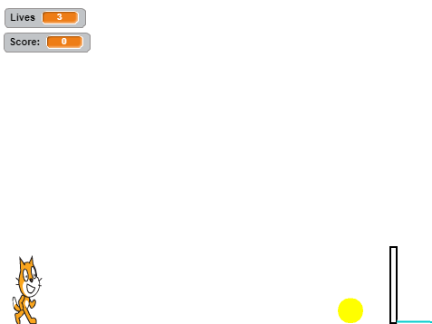

Hi! I am a member of Newark's Prudential's Girls Who Code 2017. I am really excited to learn how to code and to develop a sisterhood with all the other girls. Read this page to learn more about me and see some of my projects from this summer!
Fun Fact: I love watermelon!
| Likes | Dislikes | Favorites |
|---|---|---|
| Ice Cream | Cherry Pie | Gelato |
| Mango | Figs | Watermelon |
| Ducks | Snakes | Giraffes |
|  |
| On Day 3, we created a side scroller game called Jump, pictured above. The cat jumps up and down over the moving blocks. Points are scored when collecting the yellow coins or if the cat lands on the blue line over the block. |